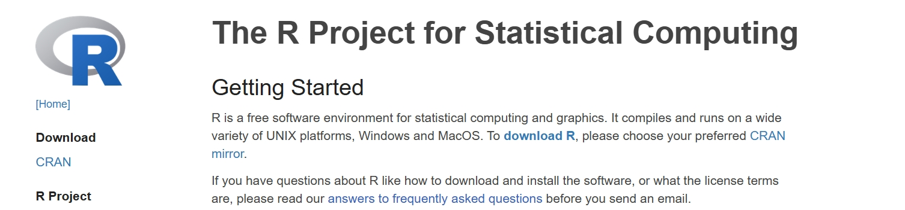

Tutorials for Tidymass shinyapp
1 Installation
Tidymass shinyapp is a user-friendly web application for Tidymass that requires little or no programming experience.
The app can only be installed via code now, and we will introduce how to do that step by step in this chapter.
1.1 Install R and Rstudio
To begin with, you need to install R and Rstudio, both of which can be free downloaded from official websites.
If you have installed them before, please ensure that R version > 4.1 as tidymass required, ohterwise download and install the latest version of R.
Install R
Download R and install it.

Install Rstudio
Download Rstudio and install it.

Open the Rstudio

1.2 (For Mac User) Install Cario
Cairo is a 2D graphics library used by R for high-quality plots and needed for Tidymass Shinyapp. On macOS, it requires the X11 system, which is not installed by default. You can follow the following steps if you haven’t install Cairo.
First, visit the official website of XQuartz and install it, and this will restart your computer.

Next, you can install Cairo by running the code in Rstudio:
If the installation is successful, you should be able to library it:
1.3 Install Tidymass shinyapp
Here we provide three different methods to install tidymass shinyapp: R, Docker and Server.
Install with R
First, you are recommended to install Tidymass with the following code. For more information and guidance, please refer to Tidymass Website
Second, install the necessary packages:
if (!require('remotes')) install.packages('remotes');
if (!require('tidyverse')) install.packages('tidyverse');
if (!require('writexl')) install.packages("writexl");
if (!require('hexbin')) install.packages('hexbin')
if (!require('ComplexUpset'))install.packages('ComplexUpset');
if (!require('shinyalert'))install.packages('shinyalert');
if (!require('shinyFiles')) remotes::install_github('thomasp85/shinyFiles');
if (!require('shinyWidgets')) remotes::install_github("dreamRs/shinyWidgets");
if (!require('shiny')) install.packages('shiny');
if (!require('bsicons')) install.packages('bsicons');
if (!require('bslib')) install.packages('bslib');
if (!require('plotly')) install.packages('plotly');
if (!require('colourpicker')) install.packages('colourpicker');
if (!require('massdbbuildin')) remotes::install_github('tidymass/massdbbuildin')Finally, install Tidymass shinyapp with the code:
To start the Tidymass shinyapp:
You should be able to see:

Install with Docker
Install with Server